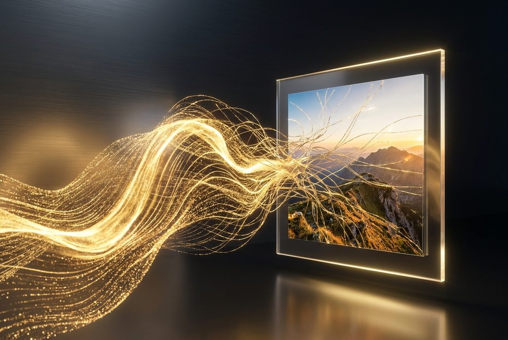
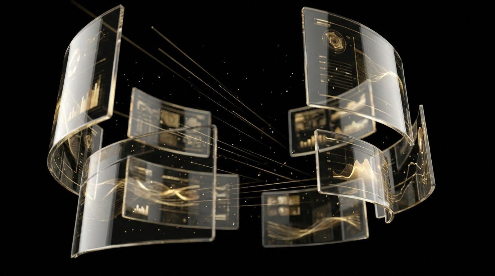

Beeld, video en tekst met AI — meer content, sneller geproduceerd, zonder in te leveren op kwaliteit.

AI met vakmanschap
AI maakt productie sneller en goedkoper — maar smaak en regie maken het verschil. Wij combineren beide.
We zetten de nieuwste AI-tools in voor beeld, video en tekst, en verfijnen elk resultaat met de hand. Zo krijg je content die schaalbaar én premium is, volledig in lijn met je merk.
Wat we maken
Unieke visuals en productbeelden zonder dure fotoshoots.
Cinematische clips en animaties, gegenereerd en gemonteerd.
SEO-teksten, posts en campagnes in jouw tone-of-voice.
Je product in honderd settings en stijlen, in een fractie van de tijd.
AI getraind op jouw stijl, zodat alles herkenbaar blijft.
Snel ideeën en moodboards visualiseren voordat we groot uitpakken.
Waarom AI-content
Een impressie

Veelgestelde vragen
Niet zoals wij het doen. We verfijnen elk resultaat met de hand en zetten AI gericht in, zodat het premium en merkecht blijft.
De content die we voor je maken is van jou. We werken met tools en licenties die commercieel gebruik toestaan.
Ja. We kunnen modellen afstemmen op jouw kleuren, stijl en producten voor consistente output.
Nee, het vult het aan. Voor sommige doelen is AI ideaal, voor andere echte opnames. We adviseren wat het beste past.
We laten je graag zien hoeveel sneller en slimmer je content kunt produceren.